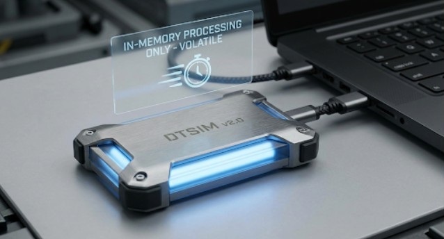
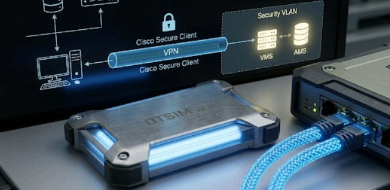
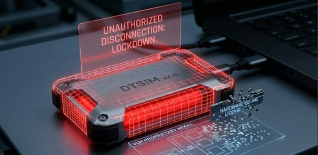

1. System Overview & Core Architecture ("Plug-and-Play" Brain)
The Digital Transcription Software Intelligence Module (DTSIM) is a forensic software overlay for corporate security. It sits over the Video Management System (VMS) and Access Management System (AMS) a site already runs, reads their events, and adds the investigation layer they lack: footage and badge data merged into one chronological forensic picture. It does not replace the installed systems. Within Site Security OPS it is the first Software Overlay Technology (SOT) module, offered through OPS-Access.
DTSIM is also designed to address the data leakage exposure inherent in multi-source network monitoring. Enterprise infrastructures running traditional security pipelines risk indirect data harvesting and compliance breaches under the New Zealand Privacy Amendment Act (specifically Information Privacy Principle 3A).
Operational Imperative: DTSIM is designed to execute all computational logic, video transcription and multi-source database queries in volatile memory on a localised physical medium, leaving a zero-byte residual file imprint on host server operating drives (C:\).
- Identity: DTSIM (Digital Transcription Software Intelligence Module).
- Role: Vendor-neutral forensic overlay for sites that already run separate video and access-control systems (SOT).
- Engine Environment: Local Node.js server environment running containerised local Vision-Language Models (VLMs).
- Physical Medium: High-speed NVMe SSD (Gen 4/5) running Portable Node.js/Docker configurations, enabling a plug-and-play architecture with no installation on the host machine.
- Volatile Processing Matrix: AI inference is designed to run strictly in memory. Dynamic video frames and real-time session data are wiped upon hardware disconnection.
- Deployment Options: (a) a sovereign plug-and-play module the client owns and keeps on site, or (b) an online connection by subscription.

Figure 1.0: DTSIM Localized External Core Module Tethered via Secure 40Gbps USB4 Interface Link
2. Physical-to-Virtual Network Handshake
The implementation isolates the host client environment while pulling the necessary forensic telemetry into the local high-speed RAM layer. To support VLM container routing offline, the backend deployment runs on-site infrastructure:
- Local Processing Core: A localised main control workstation featuring an AMD Ryzen 5 Server Array combined with 4TB WD Red Data Drive storage pools to process intensive video ingestion datasets offline.
- Data Link Connection: Direct physical Gigabit Ethernet (RJ45) connection to the client's isolated Security VLAN.
- Secure Tunnelling: Cisco Secure Client (VPN) combined with pfSense hardware firewalls allows DTSIM to securely interface with the VMS and AMS from either a remote or local workstation node.
- Data Ingestion Protocols: Live data is acquired over Real-Time Streaming Protocol (RTSP) for video, alongside secure SQL/API transaction drivers for access logs.

Figure 2.0: Hardware Network Handshake via Client Local Security VLAN
Figure 3.0: High-Throughput Data Fusion Engine Unified Ingestion
3. Unified Intelligence (The "Alloy" Core)
The core intelligence layer is a data synthesis utility that fuses disjointed network feeds into standalone forensic assets:
- Multi-Source Correlation: Merges visual tracks from VMS footage with transactional timestamp data from AMS badge-swipe logs.
- Narrative Output Synthesis: Converts raw video streams and numerical ID logs into human-readable chronological forensic reports that highlight security anomalies, perimeter tailgating and unauthorised physical breach paths.
- Operating Modes: Client-specific profiles toggled through the UI let operators move between Forensic Detail Mode and Privacy-First Log Masking.
4. Operator Workflow & Modules
DTSIM is command-driven. An investigation runs in five steps:
- 1. Command: The operator enters a forensic or operational command.
- 2. Scope: The operator sets the camera and the time window.
- 3. Review: The clip and snapshots are reviewed in the Forensics panel.
- 4. Timeline: Events are added to the case timeline.
- 5. Investigation Pack: A pack is generated to email or print.
The interface is organised into six modules: Events, Cameras, Forensics, Logs, Diagnostics and Options, with live status shown for the connected VMS, AMS and SQL systems.
5. Software Assembly Partition & Core Cost Matrix
The deployment environment maps operational dependencies onto an isolated file workspace executed from the external media asset:
DTSIM_CORE/ [External NVMe Allocation Root Partition]
├── start_dtsim.bat (Local Script Runtime Initialization Env)
├── workspace/
│ ├── interface.html (Localized Graphical Dashboard Lens)
│ └── app.js (Asynchronous Front-End Request Controller)
├── server/
│ └── server.js (In-Memory Ingestion & Transcription Core Orchestrator)
└── binaries/
├── node/ (Portable Runtime Environment Binary Engine)
└── ffmpeg/ (Local In-Memory Video Stream Demuxing Engine)
Sourcing and staging costs for the proof-of-concept package use local commercial channels within New Zealand:
| Component Pillar |
Technical Material Specifications Sourced |
Unit Cost (NZD) |
| High-Endurance Media |
1TB NVMe PCIe Gen 4/5 External Solid State Memory Medium |
$220.00 |
| High-Speed Ingestion Cable |
40Gbps USB4 / Thunderbolt 4 Braided High-Velocity Tether Link |
$85.00 |
| Enclosure Framework |
CNC IP67 Anodized Ruggedized Aluminum Heat-Dissipating Chassis |
$75.00 |
| Compliance Framework |
NZ IPP3A Localized Automated Logging Engine Template Scaffolding |
$450.00 |
| Operational Adaptors |
Multi-port array bridges, local VLAN patch test cables |
$120.00 |
| Total Material Capital |
Integrated Local DTSIM Proof-of-Concept Hardware Package |
$950.00 |
6. Commercial Compliance (IPP3A Shield)
DTSIM is designed to help organisations meet New Zealand Privacy Amendment Act obligations. This is a design target, not a certification: independent testing and audit are still to come.
- IPP3A Compliance Automation: An embedded, automated "Reasonable Steps" ledger generator, designed to support oversight requirements around indirect metadata collection.
- Mandatory Notification Data Processing: The system is designed to identify, segment and cache the parameters needed for compliance reporting: source verification, collection purpose tracking and intended data recipients.
7. Regulatory Safeguards & Kernel Partition Defense
The defensive layer is a primary value driver for enterprise risk management. If unauthorised extraction is detected, a hardware-level interrupt script is designed to lock down local file partitions.
Figure 4.0: Live Execution Panel Outputting Real-Time Forensic Logs

Figure 5.0: Automated Kernel Partition Defense Lockdown Trigger State
8. Place Within Site Security OPS
DTSIM is one layer of OPS-Access, the software side of Site Security OPS. It works alongside the consultancy services, which build or restructure a site's security operation, and alongside two further tools:
- Telemetry Forensic Modeller (TFM): a free modelling tool, available now.
- Agent OPS (in development): a subscription lens that reads a site's own activity and movements to show where department activity collides and slows an operation, so the cause can be removed or a protocol introduced. It works from site-level flows and patterns, with client consent and privacy policies in place.